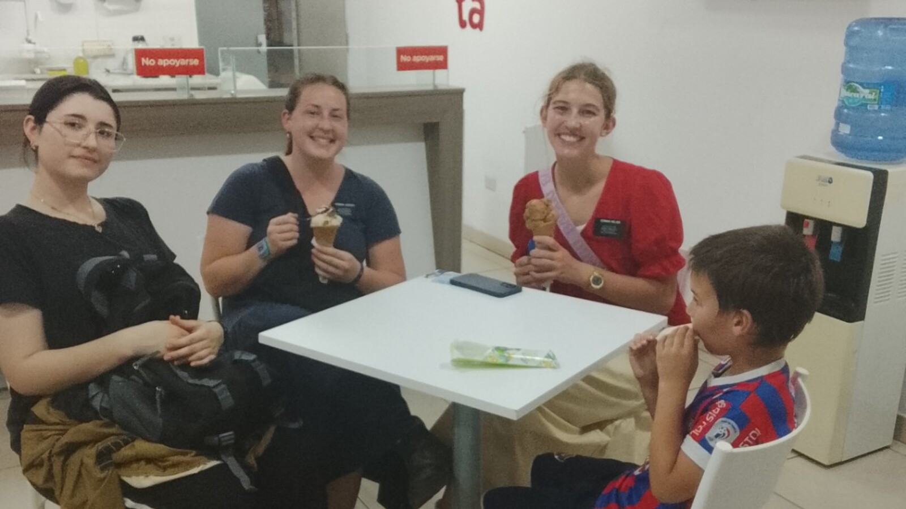

Why Every Adult Deserves Purpose, Routine, and Belonging
Purpose does not have to mean a job. Routine does not have to mean control. Belonging does not have to be earned. Together, they help turn care into a life.

Imagine an adult whose physical needs are met perfectly.
Meals arrive on time. Medication is correct. Clothing is clean. The building is safe. Appointments happen. Every care task is documented.
But nobody expects them anywhere.
Their days have no shape beyond the staff schedule. Activities are selected for convenience. Relationships change with every shift. There is nowhere they are known except as a client.
That person is receiving care.
They may still be missing a life.
Adults with autism and intellectual disabilities need food, health care, hygiene support, supervision, communication assistance, and safety according to their individual needs. They also need the human architecture that makes daily life matter: purpose, supportive routine, and belonging.
Purpose is larger than productivity
In adult life, purpose is often translated immediately into employment.
Work can provide income, structure, contribution, relationships, identity, and satisfaction. Disabled adults who want to work deserve real opportunity and appropriate support.
But paid employment cannot be the only doorway to purpose.
Purpose can be having a role in the household.
Knowing who feeds the dog.
Choosing the music during breakfast.
Carrying something to the neighbor.
Helping prepare a familiar food.
Being the person who always wants to inspect the garden.
Going somewhere because people notice when you are absent.
For someone with profound support needs, purpose may be experienced through participation, relationship, anticipation, responsibility, preference, or simply having an effect on what happens next.
That is not a smaller human need. It is a broader understanding of how purpose appears.
Routine can provide safety without turning life into a schedule
Routine can reduce uncertainty. It can support communication, sleep, eating, medication, transitions, sensory regulation, and trust.
Knowing what happens next may make it possible for someone to tolerate a change. A familiar morning sequence may help a person leave home. A regular meal may provide comfort. A repeated weekly outing may become a relationship with a place and its people.
But routine can also become institutional control.
Everyone wakes because the shift changed.
Everyone eats because the kitchen is ready.
Everyone attends the same activity because staffing is easier.
Everyone goes to bed because the building needs to become quiet.
A supportive routine is built around the person. An institutional routine requires the person to fit the operation.
Predictability should help an adult live their life. It should not allow everyone else to live it for them.
Belonging is more than being physically included
A person can sit in a crowded room and still not belong.
Belonging is relational.
Someone knows your usual order.
Someone saves your seat.
Someone understands the sound you make when you are ready to leave.
Someone notices you missed Sunday.
Someone remembers which food you will actually eat.
Someone is glad to see you even when supporting you is difficult.
For adults who rely on others for transportation, communication, and safety, belonging rarely happens by accident. Someone has to protect the time, transportation, continuity, introductions, and repeated presence through which relationships grow.
CMS guidance on community-based services gives practical examples of person-centered community life, including participation in a faith community, a favorite club, a regular restaurant, volunteering, or work. The examples matter because they describe repeated connections, not one-time disability outings.
The three needs strengthen one another
Purpose without routine can remain inaccessible. A person may enjoy helping at a garden but need a predictable day, familiar clothes, transportation, and the same support person to participate.
Routine without belonging can become sterile. The schedule functions, but nobody is emotionally invested in whether the person enjoys it.
Belonging without adequate support can be fragile. Friends may care deeply but lack the transportation, communication knowledge, personal-care skill, or consistency needed to keep including the person.
Together, the three create a stronger pattern:
- Purpose: there are people, places, interests, and roles that matter.
- Routine: there is enough predictability and support to reach them.
- Belonging: participation becomes relationship, identity, and being known.
People with high support needs should not receive leftovers
As support needs increase, a person's life can narrow around logistics.
Transportation is harder.
Outings require more staff.
Personal care takes time.
Communication requires patience.
Medical and safety risks complicate spontaneity.
The easiest operational answer is to reduce life to whatever can be delivered inside the home with the fewest people.
That is precisely why purpose and belonging need protection.
A person should not receive only leftover activities, leftover time, and whoever happens to be working. High support needs may require more careful planning, not a smaller claim to community and relationship.
Belonging must survive difficult days
Many programs welcome people while they are easy to support.
But a lifelong home must prepare for illness, grief, aggression, elopement risk, sleep disruption, regression, incontinence, medication changes, mobility loss, dementia, and the many ways aging can complicate care.
Safety interventions may become necessary. Staffing may need to increase. Activities may need to shrink or change. Outside medical or behavioral support may be required.
The response cannot be that the person has become too difficult to belong.
Casa de SAM's developing vision includes a simple founding principle: harder care does not erase belonging.
The home adapts.
The routine adapts.
The ways a person experiences purpose may adapt.
The promise remains.
Faith communities can become part of ordinary belonging
The photograph on this page shows Sam having ice cream with missionaries serving in our local congregation here in Paraguay.
It is not a dramatic moment.
That is what makes it valuable.
They know him. He sits at the table. We share food. His presence is ordinary.
Faith communities can offer worship, meals, music, transportation, practical help, celebrations, and relationships across generations. They can also fail disabled people when buildings are inaccessible, behavior is misunderstood, inclusion depends entirely on one exhausted parent, or the person is treated as a service project.
Casa de SAM may be rooted in Christian conviction while protecting each resident's dignity and religious freedom. Participation should reflect the resident's and family's wishes and appropriate legal decision-making. Churches and other faith communities should be welcomed when they respect the person rather than using them.
Paid support cannot be the whole relationship network
Good caregivers may become deeply important. Their work deserves respect, training, supervision, and fair compensation.
But an adult's entire social world should not disappear whenever a staff schedule changes.
Family, neighbors, congregation members, friends, housemates, volunteers, familiar shopkeepers, and community partners can all become part of a wider circle. Not every relationship needs to be intimate. Being recognized in ordinary places also matters.
Building that network takes boundaries. Volunteers need screening and supervision. Privacy must be protected. Residents should not be displayed for donors or pressured into interaction. Natural support does not mean free labor replacing trained staff.
It means the person's life contains people who are present for reasons beyond a paycheck.
Purpose can be quiet
Purpose is sometimes quiet enough that outsiders miss it.
A resident may be the person who sits nearby while bread is made.
Who chooses whether the radio is on.
Who walks the property every afternoon.
Who greets one familiar visitor.
Who helps by carrying one object and then leaves.
Who brings a sense of rhythm to the household because everyone knows what they like and how they participate.
Purpose does not require constant output. It can mean that a person's preferences, presence, and relationships shape the place where they live.
What you can do this week
Map the places where the person is known
Write down every home, congregation, store, park, program, relative's house, or community place where someone recognizes them. Circle the relationships that currently depend entirely on one caregiver.
Identify one real household role
Choose something small that fits the person's interests and abilities: selecting music, carrying laundry, feeding an animal with help, choosing a snack, watering one plant, or signaling that a routine should begin.
Write down three routines worth protecting
Document what happens, when it happens, what support is needed, and what distress may look like if the routine changes.
Invite one relationship to become more direct
Help a trusted relative, friend, congregation member, or neighbor learn one way to communicate or share an activity with the person instead of relating only through the primary caregiver.
Ask who would notice an absence
If the answer is only family and paid staff, identify one community connection that could be developed through repeated, supported presence.
Long-term questions to consider
- What gives this person a sense of anticipation, participation, or influence?
- Which routines provide safety, and which exist mainly for caregiver convenience?
- How will preferred routines transfer to a new home or new staff?
- Who knows the person outside the family and paid-care system?
- How will transportation support continued relationships?
- What happens to community ties when a parent becomes ill or dies?
- How will the person's faith or nonreligious preferences be respected?
- Can roles and activities adapt as health and mobility change?
- How will privacy and safety be protected while welcoming community?
- Does the person have permission to rest, refuse, grieve, and have difficult days without losing belonging?
Casa de SAM's position: residents do not have to earn their place
Casa de SAM is being imagined as a home, not a productivity center.
Residents may work, volunteer, worship, garden, bake, swim, travel, rest, help around the house, spend time with friends, or participate in community life according to their interests, needs, and safety.
They may have seasons when they participate very little.
They still belong.
Their purpose is not to produce income for the organization.
Their routine is not designed to make them easy to manage.
Their belonging is not conditional on being cheerful, compliant, healthy, improving, or inexpensive.
They are residents who belong in their own home.
Care keeps a person alive. Purpose, routine, and belonging help make that life recognizably their own.
Sources and further reading
- Centers for Medicare & Medicaid Services: Home- and Community-Based Services overview.
- CMS guidance on community integration, individual preferences, faith communities, clubs, restaurants, volunteering, and work.
- CMS guidance on person-centered planning in residential and adult day settings.
- Ratti V, et al. The effectiveness of person-centred planning for people with intellectual disabilities: a systematic review. Research in Developmental Disabilities. 2016.
- Mason D, et al. Predictors of quality of life for autistic adults. Autism Research. 2018.
About Casa de SAM
Casa de SAM is a developing vision for a lifelong residential community in Paraguay for adults with autism and other developmental disabilities who need substantial daily support. The project is being built around one central promise: residents should remain safe, known, respected, and able to belong beyond the lifetime of their parents.
Casa de SAM is not yet an operating nonprofit or residential provider. We are currently researching, documenting the vision, and looking for people who may eventually help build it responsibly.
This article provides general educational information and describes Casa de SAM's developing philosophy. It is not individualized medical, therapeutic, legal, religious, behavioral, or residential-placement advice. Support, routines, community participation, and faith involvement should reflect the individual's communication, preferences, health, safety, rights, and legal decision-making arrangements.